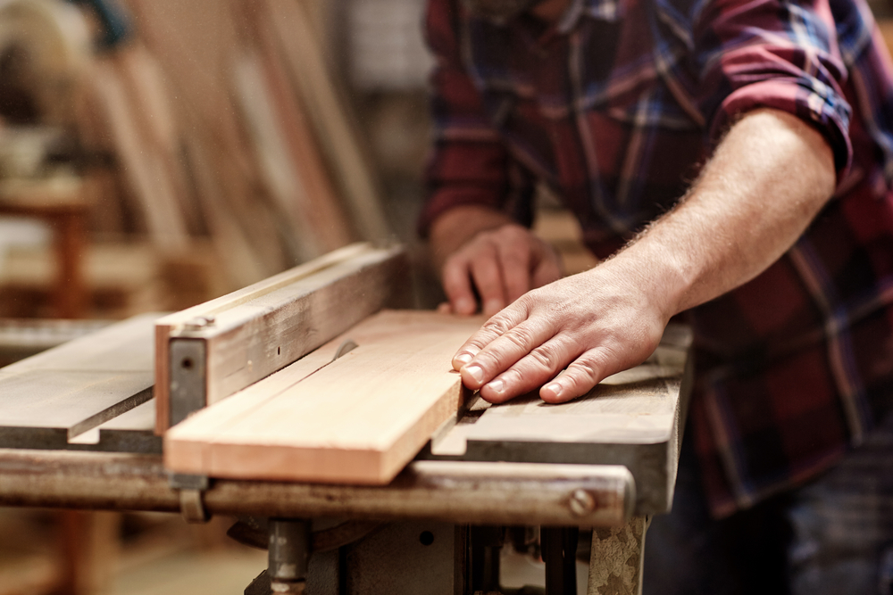

Top Five Favorite Things
- Basketball
- Basketball is one of my favorite things because I love playing it, watching it,and learning more about the greats(like Kobe, Jordan, Wilt).
Big Baller

- Saints
- Drew Bress made me a Saints fan because of his inspirational pre-game huddle speeches and extraordinary preformance under pressure. This created a love to watch him play with his teammates.
NOLA
- Lakers
- When I was young I asked my brother what player had a good three point shot. He responded "Kobe Byrant," and ever since that day I have been a Lakers fan. Little did I know I would stive to have the "Mamba Mentality" of Kobe in my everday life.
Lake Show
- University of South Carolina
- My grandfather went to USC and when I was young took me to many games at Willy B and Colonial Life Arena. This started my gamecock fanship. Then many years later when his health was declining we got to watch USC on TV beat Forida in March Madness to punch their ticket to the Final Four. That was a special moment I will never forget seeing his smile as I did a couple of victory laps around the house.
USC GO COCKS!!!
- Woodworking
- My grandfather also sparked the love in me for woodworking. He was a great woodworker and taught me almost all I know.
2by4
- 